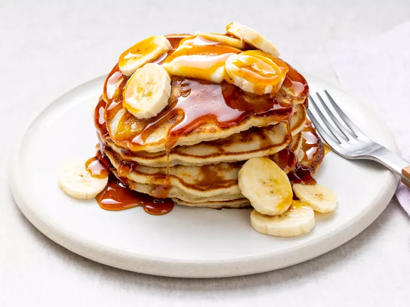

Banana Pancakes Recipe

Description
Ingredients
- An egg
- Milk
- Baking Powder
- Water
- Salt
- Flour
- Vegetable Oil
- Bananas
Steps
- Combine your dry ingredients (flour, sugar, salt, baking powder) in one bowl and your wet ingredients (egg, milk, vegetable oil, mashed bananas) in another bowl.
- Add the dry ingredients to the bowl with the wet ingredients, then stir until they're incorporated. It's OK if your batter is slightly lumpy.
- Pour the batter in ¼ cup portions onto a lightly oiled pan or griddle over medium-high heat.
- Cook for a few minutes, flip with a spatula, and cook for another few minutes (or until each side is golden brown).
- Serve your banana pancakes immediately. They're delicious alone or with your favorite pancake toppings.
Back to Home